MSc. Alcides Ramos Zambrano
Ingeniero electrónico y magíster, docente de la Universidad Tecnológica de Bolívar en Cartagena. Más de 20 años en la electrónica: mantenimiento de equipos biomédicos, y diseño de vehículos autónomos para la Armada Nacional, control industrial y sistemas embebidos con STM32, ESP32 y PIC.
Mi trayectoria
-
2001
Tesis de grado meritoria
Robot didáctico programable controlado por computador vía radiofrecuencia. Mi tesis, terminada en marzo de 2001 y calificada como meritoria, en los años en que la mecatrónica se abría campo en Cartagena.
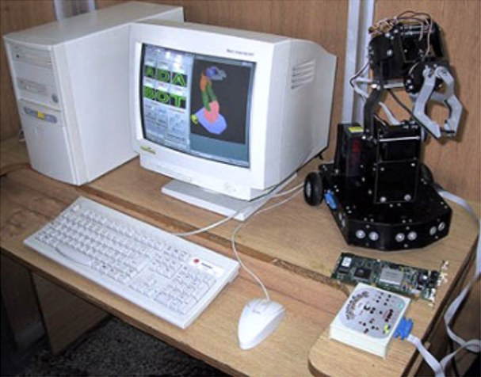
El robot de la tesis en la nota "La Mecatrónica se abre campo en Cartagena" (Tecnológica de Bolívar, 2001). -
11 años
Ingeniero de servicio en Laboratorios Baxter
Mantenimiento de máquinas biomédicas: hemodiálisis y bombas de infusión. En paralelo, siempre ligado a la docencia y al desarrollo de software (llamado de enfermería, control de aires acondicionados, control de ósmosis inversa).
-
2009 – 2014
Investigación con la Armada Nacional y la Escuela Naval
ROV submarino, inspección de cascos de buque, boya oceanográfica, piloto automático de buque fluvial (USV) y del avión de vigilancia marítima PAVMA. Proyectos financiados por Colciencias y el Ministerio de Defensa.
-
2019
USV SÁBALO y banco de pruebas de torpedo
Vehículo de superficie no tripulado para patrullaje marítimo y fluvial, con LIDAR, AIS y cámaras térmicas, y un banco de pruebas para torpedo.
-
2021
Ponente del grupo GICCDN
Grupo de Investigación en Control, Comunicaciones y Diseño de la Escuela Naval Almirante Padilla, categoría B de Colciencias.
-
2022 – 2023
Proyectos industriales y militares como independiente
Tarjetas de integración para COTECMAR, control de plantas de ósmosis y microfiltración, ingeniería inversa de control hidráulico. Participación en Expodefensa 2023.
-
2024 – 2025
Nuevos desarrollos y divulgación
Tableros de control, estación meteorológica IoT y charlas como la de la Universidad Privada del Norte (Perú, 2024).
Dónde he enseñado
- Universidad Tecnológica de Bolívar
- Escuela Naval de Cadetes Almirante Padilla
- Universidad Antonio Nariño
- Fundación Universitaria Tecnológico Comfenalco
Premios
- Premio categoría Academia, Ciencia y Tecnología: impacto de la producción científica y tecnológica de la ENAP a las Fuerzas Militares.
- Reconocimientos de la Armada Nacional.
- La Escuela Naval ganó el torneo de robótica de Expotecnología 2022.
Con qué trabajo
- STM32
- ESP32
- PIC / dsPIC
- FPGA
- Arduino
- C / C++
- LabVIEW · myRIO
- Python
- Proteus
- PCB 4 capas SMD
- IMU · GPS
- RF · WiFi · Bluetooth
- Lógica difusa
Del laboratorio al mar
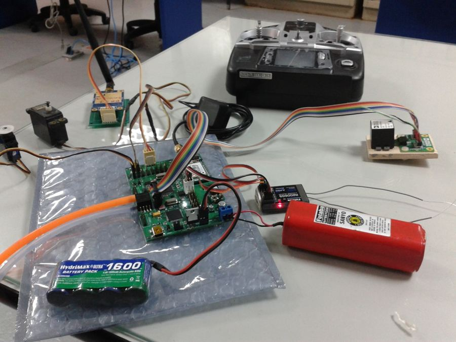
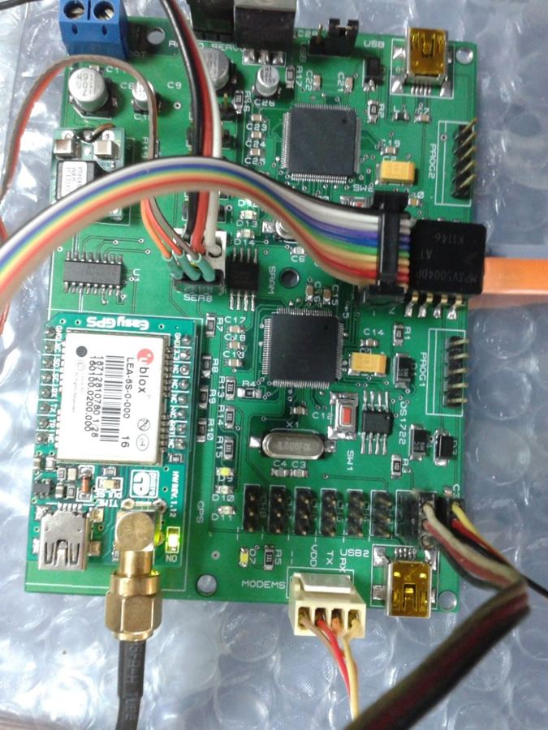
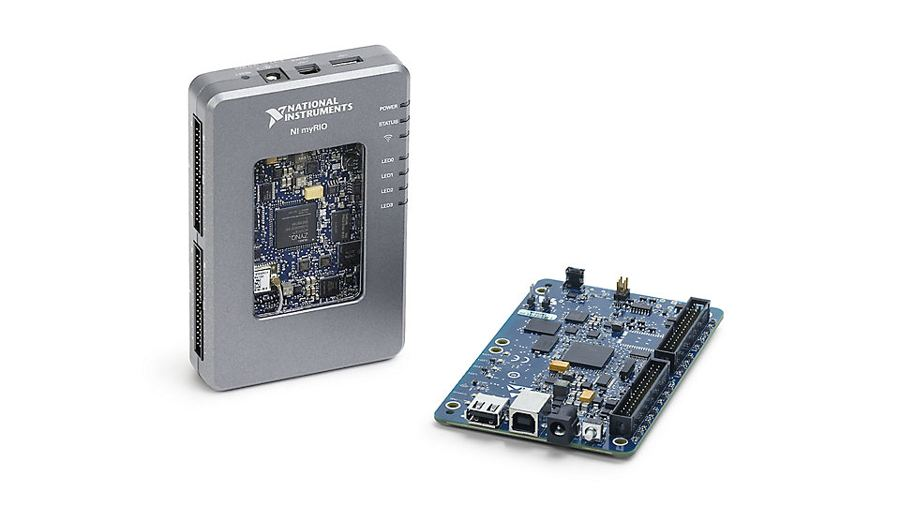
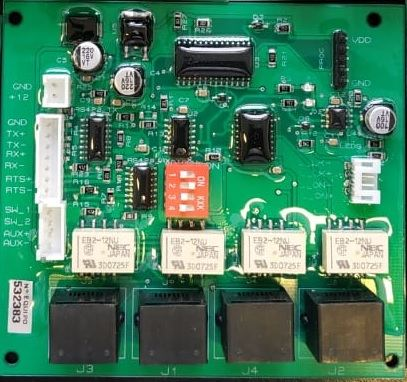
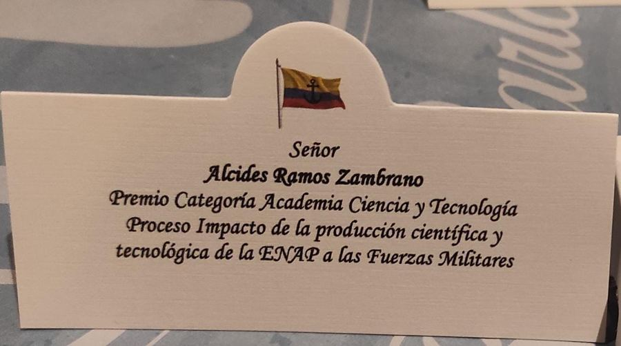
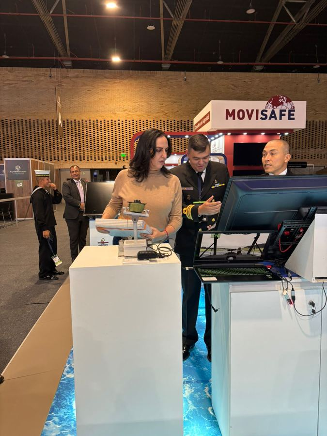
Proyectos
45 desarrollos: investigación naval, industria, biomédica y los proyectos que construyen mis estudiantes de Sistemas Embebidos.
De estudiantes a colegas
La relación con mis estudiantes no termina cuando se acaba el semestre. Muchos de ellos terminan siendo mis colegas: seguimos en contacto, nos reunimos y trabajamos juntos en proyectos reales.
Y escuchar las palabras de agradecimiento de un estudiante en su graduación es algo que para mí no tiene precio.
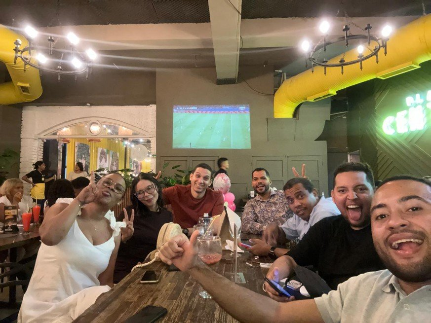
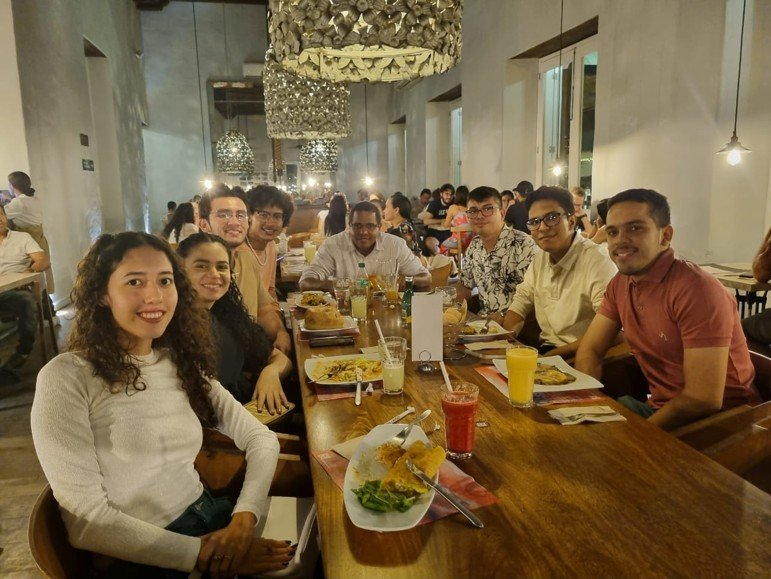
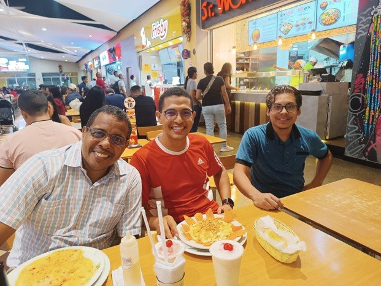
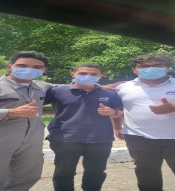
Qué debe tener cada proyecto de mis estudiantes
Las reglas con las que mis estudiantes construyen, para que cada prototipo sea un sistema embebido completo.
- Microcontrolador de 32 bits, con el código protegido.
- Mínimo 2 sensores y 2 actuadores (3 y 3 en la entrega final).
- Comunicación inalámbrica: Bluetooth, módems RF o WiFi.
- Aplicación en el celular para monitoreo y control (IoT).
- Aplicación en el PC: LabVIEW, Python, Java u otra.
- Requerimientos técnicos medibles y diagrama de bloques.
- Diseño esquemático, PCB y modelo 3D de la tarjeta.
- Montaje final en baquelita, con caja, conectores y presentación profesional.
Comparto lo que aprendemos
Mi canal tiene más de 570 videos y 10 mil suscriptores. La lista de ponencias reúne 9 charlas sobre electrónica y sistemas embebidos, entre ellas la de la Universidad Privada del Norte del Perú.